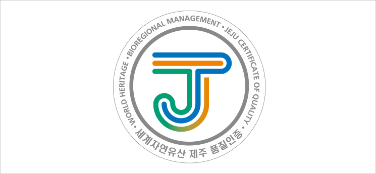
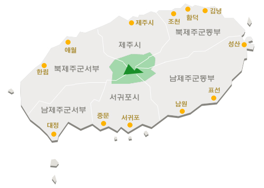

제주도
심벌마크(휘장)
심벌마크는 제주 현무암의 검은색을 기초로 강인한
제주, 전통을 지키고 발전시키는 제주인의 문화를
상징한다. 수평의 붓 터치는 평등가치의 제주정신,
세계자연유산에 빛나는 제주의 자연을 표현하며,
녹색은 푸른 한라산과 자연환경을, 청색은 청정한
제주의 바다를 상징하면서 생물권보전지역을
주황색은 특별자치도로서의 미래지향적
가치와 우뚝 솟은 제주의 희망을 상징한다.

통합인증마크
통합인증마크는 제주의 영문 이니셜 'JEJU'의 대표
이니셜 'J'를 사용하여 'J'를 중심으로(세계자연유산,
생물권보전지역, 제주특별자치도 품질인증)을
영문으로 표기하였다. 청색은 제주의 청정바다,
녹색을 푸른 녹원 영산 한라산, 주황색은 제주의
신뢰와 믿음의 비전을 상징하면서 제주산이라는
명품인증을 뜻한다.
